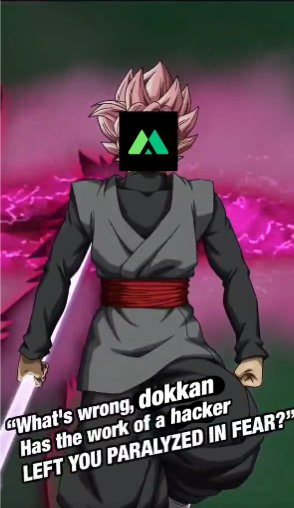
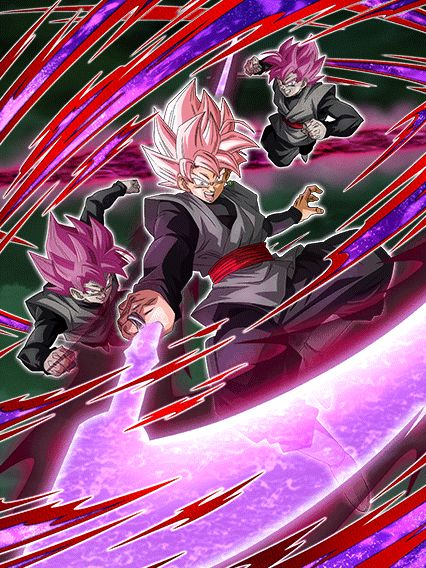

Eu juro q não sei como vão juntar as versões desse jeito.
Tipo, a proposta dessa celebração é boa, trazer de volta os LRs da celebração de download pra eles não levarem 1 ano pra voltar, mas pô, algumas pessoas tavam teorizando que aqui poderiam colocar o LR do tanabata adiantado no global pra facilitar na junção das versões mas não, é uma celebração filler estranha, bizarro.

Parece q alguém não gostou do goku black einKKKKKKKK
20 de fevereiro de 2024, 1 dia depois de revelarem o kit e animações do goku black, do nada o dokkan global muda de foto e de nome
Isso foi levemente hilário pelo timing em q aconteceu, logo depois de eles revelarem um card que aparentava ser bem decepcionante
Acho que a melhor parte foi que antes de recuperarem o acesso, a conta ainda fez questão de apagar os posts que tinham feito sobre o goku black, oq deixa tudo ainda mais perfeito

Isso foi lendário, obrigado a qualquer um q fez isso, omatsu provavelmente estava em shock (ou não pq odeiam o global)
")
Se a gente não soubesse que eventos vem no aniversário, ele seria muito bom.
Esse goku black é um card extremamente problemático
Pra começar ele lidera Super Bosses, oq é legal já q ele traz a categoria adiantada pro global, e tmb Corroded Body and Mind.. e só
O dokkan fest de 2024 não tem uma 170% pra 3 categorias, beleza então né
Continuando ele tem animações bem zuadas, parece muito que ele era um card de 2021 q ficou guardado lá e decidiram usar agora, tem frames bonitos sim, não tá no nível da kale ou blue boys agl, o fato é q pros padrões do dokkan, principalmente depois do aniversário no jp, era de se esperar muito mais
Bom, falando do card em si, ele precisa de um time super bosses pra ter redução de dano (omega shenron 2: a vingança), pq ele tem 30% de redução mas isso é só antes de atacar (por favor não jogue esse cara no slot 1 achando q ele vai tankar)
E aí tem a grande mecânica dele: lançar ataques adicionais básicos.
É o seguinte: a cada rainbow orb q vc pegar vc lança 1 adicional básico, e não, não é exagero, realmente não tem como esse adicional ser um super, oq é ridículo
Apesar disso, ele tem um adicional garantido com chance de ser super oq é ok, e lança um super adicional garantido se atacar 5 vezes, então no geral vc vê isso acontecer se pegar pelo menos 3 rainbow orbs.. só tem um probleminha.. O GOKU BLACK NÃO É ORB CHANGER
E assim, vc realmente quer pegar esses adicionais básicos, pq a cada ataque q ele fizer, ele ganha 30% de ATK e DEF no turno, independente de ser super ou não, então se vc atacar muito vai acumular um dano e defesa bons, mas fica nisso, vc tá travado pelo rng dos orbs, vai realmente levar tudo na sorte?
Bom uh, esse cara tem um domínio então, expansão de domínio? 😳

Belo domínio amigo, agora tente escolher se usa esse domínio ou o do broly 💀
Antes de reclamar mais, eu AMO essa arte, slk
Bom, o goku black só fica por 4 turnos nessa forma então eh, ele fica "melhor" entre algumas aspas
Além do aumento em alguns números na passiva dele, AGORA ele vira orb changer então ele cria seus próprios orbs né, além de ser efetivo contra tudo e manter as mecânicas q ele já tinha
Por algum motivo a redução de dano inteira q ele tinha antes é toda antes de atacar agora, boa sorte tankando supers
Ah, e se vc está preocupado com os adicionais básicos dele, não se preocupe! Pois agora o goku Black lança adicionais com 10% DE CHANCE DE SEREM SUPERS, WOW DOKKAN, OBRIGADO POR DEIXAR ESSE CARD COMPLETAMENTE QUEBRADO NOS INCRÍVEIS 4 TURNOS Q ELE EXISTE
Eu realmente detesto isso, não tem necessidade de chances tão horríveis, principalmente pq isso é temporário e ainda sim, vc nunca vai usar o domínio desse cara
Sim sim, nesse momento o broly ainda não existe no global, mas não faz diferença, pq tmb tem o zamasu fusão
Me responde, vc prefere dar 20% de ATK e DEF pra super bosses, ou ser COMPLETAMENTE INVENCÍVEL por 5 turnos? Qual domínio vc acha mais útil num evento difícil ein?
Esse lançamento foi triste pq o goku black consegue sim competir no omega e etc, mas nos eventos q vem por aí no aniversário, impossível pra ele
E pra piorar ele não tem um card secundário pra ajudar, triste.
Atualização de Junho de 2024: O Goku Black na verdade veio com uma celebração incompleta no Global.
Ele tinha sim um card secundário que foi parar na Celebração do Freeza pq o global é muito esquisito
Não só isso, mas o Goku Black também foi genuinamente buffado em ambas versões, já que agora ele também lança um Super Attack adicional toda vez que faz 10 ataques, o que não é muito difícil não
Talvez eu tenha tratado esse cara com muita ignorância no lançamento dele..